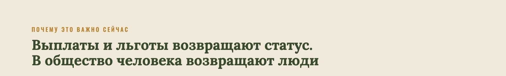
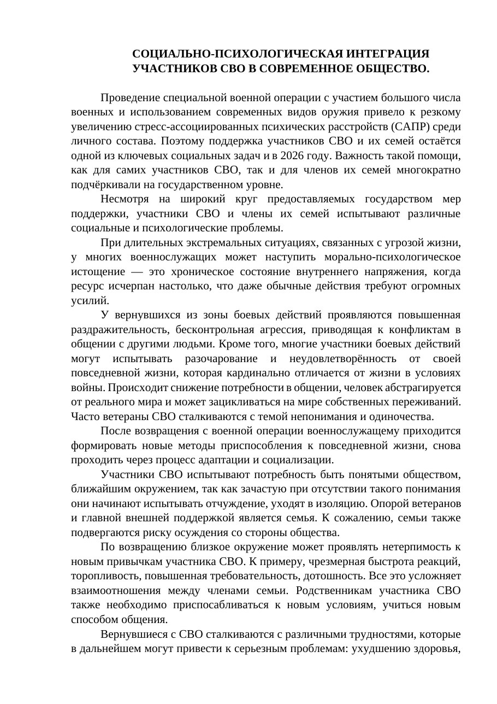
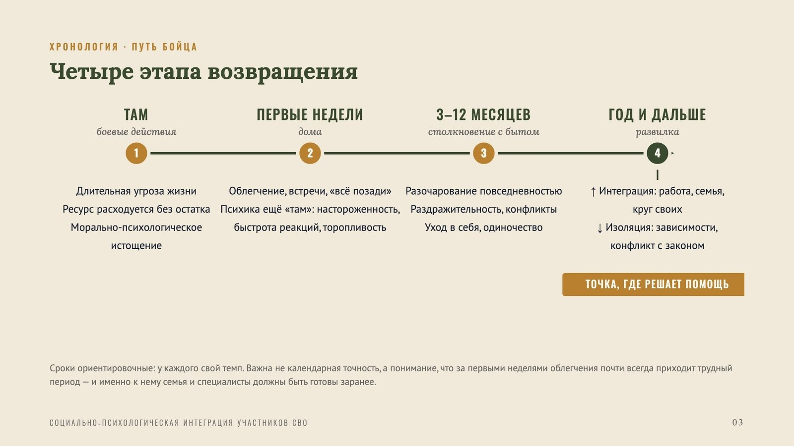
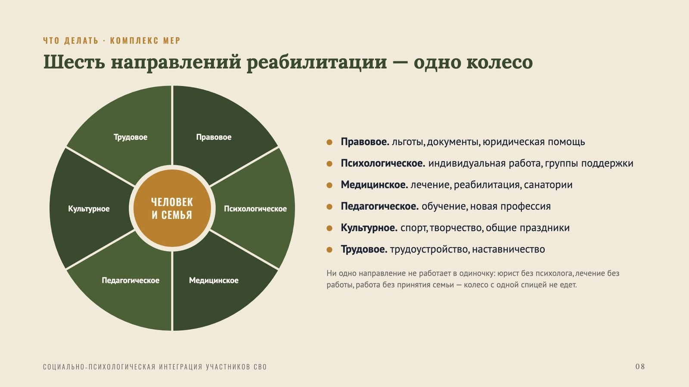

Разбор · презентации
3 ошибки, из-за которых слайды трудно читать
Разбор для тех, кому скоро выступать: как оформить текст на слайде и за один вечер сделать презентацию понятной, даже если вы не дизайнер. В конце чек-лист и заготовка слайдов, их можно скачать.


Вы готовились неделю, вышли к залу, а люди щурятся в экран и вас не слушают. Обидно. И почти всегда дело не в вас и не в теме, а в слайдах: их трудно читать.
Я Алёна Прасолова, собираю презентации к выступлениям для педагогов, психологов, мастеров и малого бизнеса. Чаще всего вижу одни и те же три ошибки. Хорошая новость: все три исправляются за вечер в обычном PowerPoint или Google Slides.
Коротко
Слайды трудно читать из-за трёх вещей. На слайд переносят абзац текста. Вместо вывода в заголовке пишут тему. Оформление превращается в кашу. Что делать: одна мысль на слайд и схема вместо абзаца, заголовок как готовый вывод одной фразой, один-два шрифта, крупный текст и один акцентный цвет.
Некогда разбираться? Пришлите текст, помощник задаст пару вопросов и назовёт цену.
1Абзац вместо мысли
Как выглядит. На слайде лежит кусок доклада: полный абзац, мелко, от края до края. «Чтобы ничего не забыть».
Почему мешает слушателю. Читать и слушать одновременно человек не умеет. Как только на экране появляется абзац, зал начинает читать. Читает он про себя быстрее, чем вы говорите, дочитывает раньше и дальше просто ждёт. Ваши слова в это время проходят мимо.
Как исправить за вечер
- Для каждого слайда ответьте себе: что одно человек должен отсюда унести? Запишите это одной фразой.
- Всё остальное уберите в заметки докладчика. Это ваша шпаргалка, а не текст для зала. Заметки есть и в PowerPoint, и в Google Slides.
- Подберите оставшейся мысли форму. Есть этапы или порядок действий: шаги со стрелками. Всё повторяется по кругу: круг. Сравниваете «до» и «после»: две колонки «было / стало». Всё держится на одном числе: число крупно на весь слайд и подпись в одну строку.
- Если в абзаце три мысли, сделайте три слайда. Слайды бесплатные, а внимание зала нет.
Скачать заготовку «4 схемы вместо абзаца» PowerPoint, 5 слайдов: шаги, круг, было/стало, число крупно. Открывается и в Google Slides, и в Keynote. Без регистрации.
2Заголовок-тема вместо заголовка-вывода
Как выглядит. «Результаты». «Проблемы». «Актуальность». «Итоги работы». Такие заголовки похожи на коробки с надписью «разное»: что-то внутри есть, но что именно, надо открывать и разбираться.
Почему мешает слушателю. На слайде человек первым делом смотрит на заголовок. Если там тема, ему приходится самому догадываться, к какому выводу вы ведёте. Догадается не каждый, а пока догадывается, пропустит вашу следующую фразу. И после выступления в памяти остаются как раз заголовки. Хорошо бы, чтобы там было что-то кроме слова «Результаты».
Как исправить за вечер
- Выпишите все заголовки слайдов столбиком на один лист.
- К каждому задайте вопрос: «И что из этого следует?» Ответ одной фразой и есть новый заголовок.
- Проверьте фразу: в ней есть глагол, и её можно повторить коллеге как мысль. Вместо «Факторы успеваемости» получится «Четыре звена, которые держат успеваемость». Вместо темы про меры поддержки получится «Выплаты и льготы возвращают статус. В общество человека возвращают люди». Это настоящий заголовок из доклада, о котором ниже.
- Прочитайте подряд только заголовки, как отдельный текст. Если из них складывается краткий пересказ вашего доклада, всё получилось.

3Каша в оформлении
Как выглядит. Три шрифта на одном слайде, текст мелкий, половина выделена жирным, ещё часть красным, а в углу улыбающаяся картинка из интернета, «чтобы было не скучно». Всё кричит одинаково громко, поэтому не слышно ничего.
Почему мешает слушателю. Глаз ищет, куда смотреть первым. Когда выделено всё, главное не выделено вовсе. Мелкий текст с дальних рядов не читается, а случайная картинка тянет внимание на себя и ничего не доказывает.


Как исправить за вечер
- Оставьте один шрифт, самое большее два: для заголовков и для текста. Меняйте их сразу на всех слайдах через «Образец слайдов» в PowerPoint или «Тему» в Google Slides, а не по одному.
- Увеличьте текст. Простая проверка: откройте слайд на весь экран и отойдите от ноутбука на два-три шага. Не читается, значит, крупнее.
- Выберите один акцентный цвет и красьте им только главное на слайде: одно слово, одну цифру, одну стрелку.
- Пройдитесь по фото с вопросом: что этот снимок доказывает? Если ничего, уберите. Если доказывает, поставьте крупно и подпишите, кто на нём и что происходит. Фото без подписи зал разглядывает, фото с подписью понимает.
Проверьте свою презентацию перед выступлением
- На каждом слайде одна мысль, и вы можете назвать её одной фразой.
- На слайдах нет абзацев. Всё, что вы скажете вслух, лежит в заметках докладчика.
- Заголовки звучат как выводы. Прочитанные подряд, они пересказывают доклад.
- На всю презентацию не больше двух шрифтов.
- Текст читается с двух-трёх шагов от экрана ноутбука.
- Акцентный цвет один, и он стоит только на главном.
- У каждого фото есть причина быть на слайде и есть подпись.
Скачать чек-лист PDF одна страница A4, можно распечатать. Без регистрации.
Три пункта и больше не сходятся, а выступать скоро? Пришлите текст, помощник назовёт цену, а черновик вы увидите до оплаты.
Кейс: сутки до симпозиума
Анна Комарницькая, психолог и преподаватель, готовила доклад к XIV Международному симпозиуму медицинских антропологов в Москве, сентябрь 2026 года. Тема: возвращение ветеранов к мирной жизни. До выступления оставались сутки.
Что было. Реферат на 3,5 страницы сплошного текста и четыре фотографии со встреч.

Что сделали.
- Абзац о том, как человек возвращается домой, превратили в хронологию «Четыре этапа возвращения».
- Заголовки-темы заменили заголовками-утверждениями.
- Длинный перечень направлений помощи стал колесом из шести направлений.
- Фото со встреч собрали в галерею с подписями.
- Сделали памятку для зала, чтобы слушатели унесли главное с собой.


Что получилось. 17 слайдов со схемами и памятка для зала. Успели к докладу.
«Я обратилась к Алёне, и она мне всё сделала. Спасибо большое! Я под таким впечатлением, это просто счастье, словами не передать. У меня завтра конференция, уровень высокий, а у меня один доклад, и получилось так красиво!»
Не хотите разбираться сами
Бывает, что свободного вечера нет. Тогда пришлите текст мне. Помощник (ИИ) собирает черновик слайдов, а я проверяю каждый своими глазами и довожу до ума.
от 1 500 ₽
Презентация до 10 слайдов. Сначала черновик, оплата после него: посмотрите, понравится ли, и только потом платите.
Прислать текст в MAXОткроется бот-приёмщик в мессенджере MAX: он спросит про выступление и назовёт цену. Удобнее Telegram? Напишите мне туда.
Частые вопросы
Сколько текста можно оставить на слайде?
Столько, чтобы зал прочитал его за пару секунд и вернулся к вам: заголовок-вывод и несколько слов к схеме. Всё, что вы и так скажете вслух, на слайде не нужно, ему место в заметках докладчика.
Я не дизайнер и не технарь. Справлюсь сама?
Да. Все три исправления делаются в обычном PowerPoint или Google Slides, без специальных программ. Начните с заголовков: это самое быстрое, а пользы от него больше всего.
Что прислать, если хочу, чтобы сделали за меня?
Текст доклада в любом виде: реферат, конспект, даже голосовые мысли, записанные текстом. Фото, если есть, и дату выступления. Остальное помощник спросит сам.